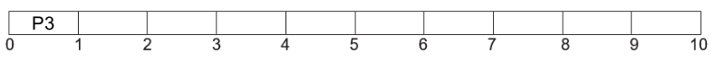
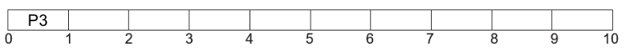
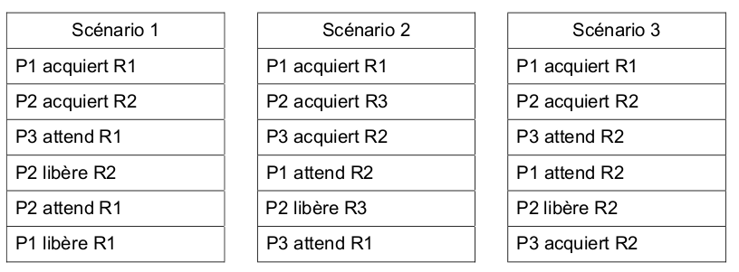
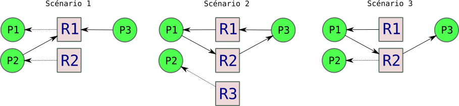

Exercices
Exercice 1
Partie A
Cette partie est un questionnaire à choix multiples (QCM). Pour chacune des questions, une seule des quatre réponses est exacte.
- Parmi les commandes ci-dessous, laquelle permet d’afficher les processus en cours
d’exécution ?
- a.
dir - b.
ps - c.
man - d.
ls
- a.
- Quelle abréviation désigne l’identifiant d’un processus dans un système d’exploitation de type UNIX ?
- a. PIX
- b. SIG
- c. PID
- d. SID
- Comment s'appelle la gestion du partage de processeur entre les différents processus ?
- a. L'interblocage
- b. L'ordonnancement
- c. La planification
- d. La priorisation
- Quelle commande permet d’interrompre un processus dans un système d’exploitation de type
UNIX ?
- a.
stop - b.
interrupt - c.
end - d.
kill
- a.
Correction
- b
- c
- b
- d
Partie B
Q1. Un processeur choisit à chaque cycle d’exécution le processus qui doit être exécuté. Le tableau ci-dessous donne pour trois processus P1, P2, P3 :
- la durée d’exécution (en nombre de cycles),
- l’instant d’arrivée sur le processeur (exprimé en nombre de cycles à partir de 0),
- le numéro de priorité.
Le numéro de priorité est d’autant plus petit que la priorité est grande. On suppose qu’à chaque instant, c’est le processus qui a le plus petit numéro de priorité qui est exécuté, ce qui peut provoquer la suspension d’un autre processus, lequel reprendra lorsqu’il sera le plus prioritaire.
 Reproduire le tableau ci-dessous sur la copie et indiquer dans chacune des cases le processus
exécuté à chaque cycle.

Reproduire le tableau ci-dessous sur la copie et indiquer dans chacune des cases le processus
exécuté à chaque cycle.

Correction
Q2. On suppose maintenant que les trois processus précédents s’exécutent et utilisent une ou plusieurs ressources parmi R1, R2 et R3. Parmi les scénarios suivants, lequel provoque un interblocage ? Justifier.

Correction
 Seul le scenario 2 présente un cycle d'interdépendance : seul le scénario 2 va donc provoquer un interblocage.
Exercice 2
2021, Métropole Candidats Libres sujet 2
Q1. Les états possibles d’un processus sont : prêt, élu, terminé et bloqué.
Q1.a. Expliquer à quoi correspond l’état élu.
Q1.b. Proposer un schéma illustrant les passages entre les différents états.
Correction
Q1a. Élu signifie que le processus est actuellement en cours d'exécution par le processeur.
Q1b.

Q2. On suppose que quatre processus C₁, C₂, C₃ et C₄ sont créés sur un ordinateur, et qu’aucun autre processus n’est lancé sur celui-ci, ni préalablement ni pendant l’exécution des quatre processus. L’ordonnanceur, pour exécuter les différents processus prêts, les place dans une structure de données de type file. Un processus prêt est enfilé et un processus élu est défilé.
Q2.a. Parmi les propositions suivantes, recopier celle qui décrit le fonctionnement des entrées/sorties dans une file :
- i.Premier entré, dernier sorti
- ii. Premier entré, premier sorti
- iii. Dernier entré, premier sorti
Correction
Q2a. ii. Premier entré, premier sorti
Q2.b. On suppose que les quatre processus arrivent dans la file et y sont placés dans l’ordre C₁, C₂, C₃ et C₄.
- Les temps d’exécution totaux de C₁, C₂, C₃ et C₄ sont respectivement 100 ms, 150 ms, 80 ms et 60 ms.
- Après 40 ms d’exécution, le processus C₁ demande une opération d’écriture disque, opération qui dure 200 ms. Pendant cette opération d’écriture, le processus C₁ passe à l’état bloqué.
- Après 20 ms d’exécution, le processus C₃ demande une opération d’écriture disque, opération qui dure 10 ms. Pendant cette opération d’écriture, le processus C₃ passe à l’état bloqué.
Sur la frise chronologique ci-dessous, les états du processus C₂ sont donnés. Compléter la frise avec les états des processus C₁, C₃ et C₄.
Correction

Exercice 3
2021, sujet Amérique du Nord
Un constructeur automobile utilise des ordinateurs pour la conception de ses véhicules. Ceux-ci sont munis d'un système d'exploitation ainsi que de nombreuses applications parmi lesquelles on peut citer :
- un logiciel de traitement de texte ;
- un tableur ;
- un logiciel de Conception Assistée par Ordinateur (CAO) ;
- un système de gestion de base de données (SGBD)
Chaque ordinateur est équipé des périphériques classiques : clavier, souris, écran et est relié à une imprimante réseau.
- (question System On Chip)
- Un ingénieur travaille sur son ordinateur et utilise les quatre applications citées au début de l'énoncé.
Pendant l'exécution de ces applications, des processus mobilisent des données et sont en attente d'autres données mobilisées par d'autres processus.
On donne ci-dessous un tableau indiquant à un instant précis l'état des processus en cours d'exécution et dans lequel D1, D2, D3, D4 et D5 sont des données.
La lettre M signifie que la donnée est mobilisée par l'application ; la lettre A signifie que l'application est en attente de cette donnée.
Lecture du tableau : le logiciel de traitement de texte mobilise (M) la donnée D1 et est en attente (A) de la donnée D2.
| D1 | D2 | D3 | D4 | D5 | |
|---|---|---|---|---|---|
| Traitement de texte | M | A | - | - | - |
| Tableur | A | - | - | - | M |
| SGBD | - | M | A | A | - |
| CAO | - | - | A | M | A |
Montrer que les applications s'attendent mutuellement. Comment s'appelle cette situation ?
Correction
 Le cycle en pointillés montre que les applications s'attendent mutuellement : cette situation s'appelle un interblocage.
Le cycle en pointillés montre que les applications s'attendent mutuellement : cette situation s'appelle un interblocage.
Exercice 4
2021, Métropole sujet 2
Partie A
Dans un bureau d’architectes, on dispose de certaines ressources qui ne peuvent être utilisées simultanément par plus d’un processus, comme l’imprimante, la table traçante, le modem. Chaque programme, lorsqu’il s’exécute, demande l’allocation des ressources qui lui sont nécessaires. Lorsqu’il a fini de s’exécuter, il libère ses ressources.

On appelle p1, p2 et p3 les processus associés respectivement aux programmes 1, 2 et 3
Q1. Les processus s'exécutent de manière concurrente. Justifier qu'une situation d'interblocage peut se produire.
Q2. Modifier l'ordre des instructions du programme 3 pour qu'une telle situation ne puisse pas se produire. Aucune justification n'est attendue.
- Supposons que le processus p1 demande la table traçante alors qu'elle est en cours
d'utilisation par le processus p3. Parmi les états suivants, quel sera l'état du processus p1
tant que la table traçante n'est pas disponible :
- a. élu
- b. bloqué
- c. prêt
- d. terminé
Partie B
Avec une ligne de commande dans un terminal sous Linux, on obtient l'affichage suivant :
La documentation Linux donne la signification des différents champs :
UID: identifiant utilisateur effectif ;PID: identifiant de processus ;PPID:PIDdu processus parent ;C: partie entière du pourcentage d'utilisation du processeur par rapport au temps de vie des processus ;STIME: l'heure de lancement du processus ;TTY: terminal de contrôleTIME: temps d'exécutionCMD: nom de la commande du processus
Q1. Parmi les quatre commandes suivantes, laquelle a permis cet affichage ?
- a.
ls -l - b.
ps -ef - c.
cd .. - d.
chmod 741 processus.txt
Q2. Quel est l'identifiant du processus parent à l'origine de tous les processus concernant le navigateur Web (chromium-browser) ?
Q3. Quel est l'identifiant du processus dont le temps d'exécution est le plus long ?
Exercice 5
Exercice 2 du sujet Amérique du Nord J2 2022
Exercice 6
Exercice 2 du sujet Polynésie J1